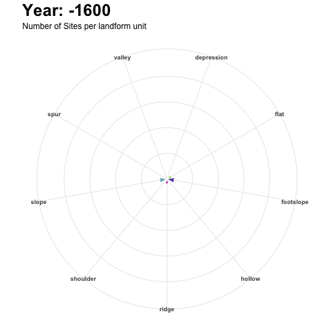

Reproducible {R}chaeological Survey
The Great Dispersal settlement patterns under Large Territorial Empires
Michal Michalski 1
@topographos2
michal.m.michalski@durham.ac.uk
1 Department of Archaeology, Durham University
Introduction
The landscape of the Levant and Northern Mesopotamia went through a significant structural change in the Late Bronze and Iron Age, termed as ‘The Great Dispersal’ (Wilkinson 2003). The tell-dominated landscape was superseded by smaller settlements and occasional large cities and new settlements spread into previously uninhabited areas. The dispersal pattern has been attributed to political activity, namely, centralisation of territorial empires.
Figure 1: Politcal landscape of the northern Fertile Crescent at the beginning of the 9th century BCE - after (Baudains et al. 2015).
Objectives
- quantify settlements dispersion in time and space
- characterise rural settlements and their relationship with imperial infrastructure
- explore political, social and symbolic meaning of the landscape change
Methodology
- deluge of
legacy surveysbuilt upon ‘Fragile Crescent’ and CLASS project database Spatial Data Scienceparadigm- tools of trade:
PostGIS, SQL, R, QGIS, GRASS, WhiteboxTools, Git and Github

Figure 2: Data Science pipeline - a sequence of processing and analysing steps - is the core of project methodological framework (Grolemund and Wickham 2017).
Exploratory Data Analysis
“detect the expected and discover unexpected” - (Thomas and Cook 2005)
Exploratory Data Analysis is a process of thinking with data. The objective is to understand the data through data transformation, visualization and modelling to ask the right questions.
The following section showcases a reproducible template for an exploration of archaeological survey.

Figure 3: The Land of Carchemish Project has carried fieldwork in the Sajur triangle region from 2006 to 2010. The project has centred around important site of Carchemish located on the Syrian-Turkish border.
Figure 4: The LCP has recover a total of 80 sites from Upper Palaeolithic to Late Islamic periods - (Lawrence and Ricci 2016)

Figure 5: The physical landscape of the study region consists of the Euphrates floodplain, the lower Euphrates terraces, limestone slopes incised by rivers valleys and the upland plains.
Figure 6: Aoristic analysis helps to deal with uncertainty of periodization by transforming archaeological phases into equal time blocks. Two periods starting at 300 BC and 300 CA represents peak of settlement within study region (Crema 2012).

Figure 7: Calculated site probability occurrence for each 100 years block.

Figure 8: An average nearest neighbor (ANN) analysis measures the average distance from each point to its nearest point. The lowest ANN is between 300AC and 600BC.
Why {R}
- R integrates space and time (better than GIS)
- seamless workflows for spatial and non-spatial analysis
- GIS bridges
- automation and reproducibility
- literate programming
References
Baudains, Peter, Silvie Zamazalová, Mark Altaweel, and Alan Wilson. 2015. “Modeling Strategic Decisions in the Formation of the Early Neo-Assyrian Empire.” Cliodynamics: The Journal of Quantitative History and Cultural Evolution 6 (July).
Crema, Enrico R. 2012. “Modelling Temporal Uncertainty in Archaeological Analysis.” Journal of Archaeological Method and Theory.
Grolemund, Garrett, and Hadley Wickham. 2017. R for Data Science. http://r4ds.had.co.nz/.
Lawrence, Dan, and Andrea Ricci. 2016. “Long-Term Settlement Trends in the Birecik-Carchemish Sector.” In Carchemish in Context, 4:38–67. Oxbow Books.
Thomas, James J., and Kristin A. Cook. 2005. Illuminating the Path: The Research and Development Agenda for Visual Analytics. Paperback; National Visualization; Analytics Ctr.
Wilkinson, T J. 2003. Archaeological Landscapes of the Near East. Tucson.